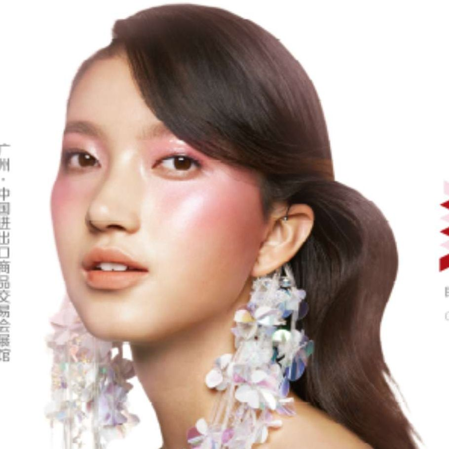
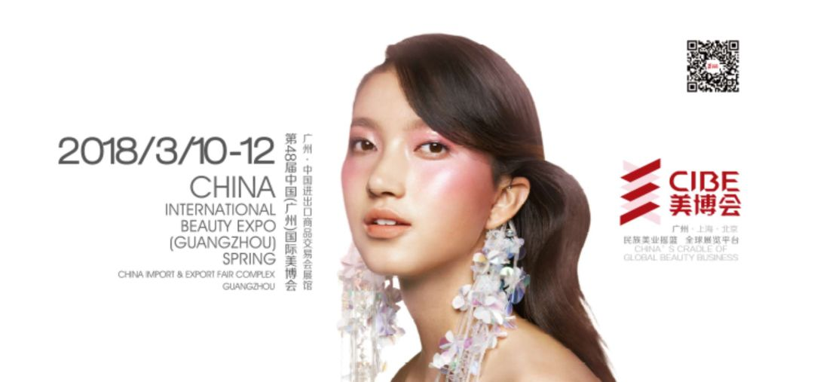
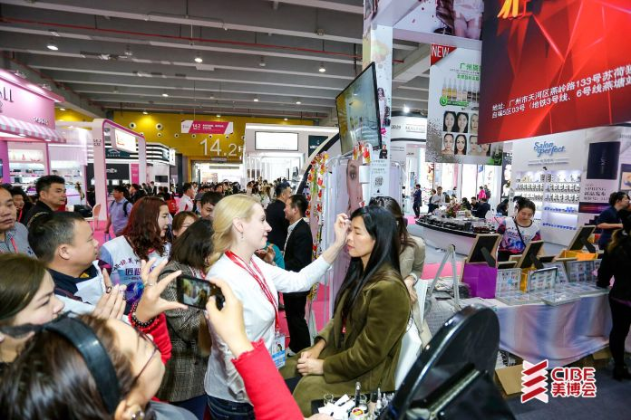
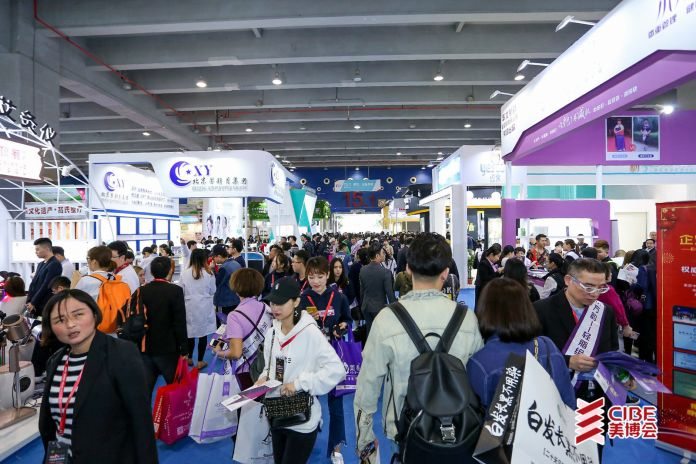
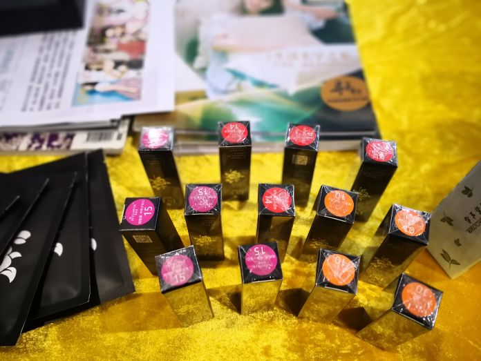
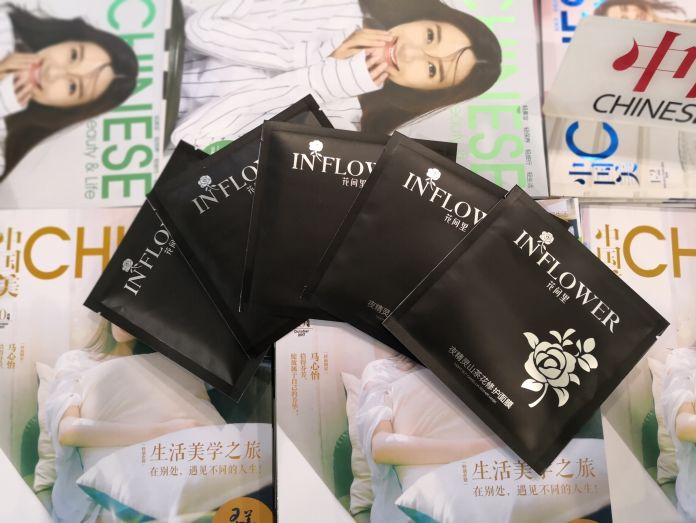

2018第48届广州美博会圆满落幕
广州美博会一年两次，分别是每年的三月份和九月份
2018第48届广州美博会时间：2018年3月10日-12日

此次展会规模仅次于意大利COSMOPROF美容展，展览规模是亚洲之best，全球第二。这场美丽盛会以无限精彩，吸引着全球美容化妆品行业人士的目光。

这是一场全球美容业的狂欢盛宴，展会吸引了来自中国大部分省份以及亚洲、欧洲、美洲、大洋洲等国家和地区的企业参展。
每届美博会的召开，对于美业人来说，都是他们的福利，因为美博会将引领美业趋势，成为美业的潮流风向标，探寻美业发展新机遇和新趋势。
（展会观众）
到会场采购和观摩的专业人士都超过80万人次，美博会已经成为全球美容行业的佼佼者。
明昌生态·花间里应邀参展第48届美博会，携夜精灵系列新品，完美亮相c区14号展馆，整体展台选用黄色作为主基调，彰显出品牌的时尚形象。

此款山茶花口红，是花间里夜精灵系列推出的第一款口红，采用山茶花精华，不仅可以滋润双唇，而且长期使用有助于唇纹淡化，具有锁水保湿功效，可多层上色，缔造柔彩色泽。

花间里系列美妆产品萃取山茶油精华凝制而成，具有改善肌肤过敏问题，滋润干燥皮肤，促进皮肤新陈代谢的功效。“花开一瞬间，直抵你心里”，“花间里”产品助力每位佳丽还原生态之美，走向自然、华美、健康之路！